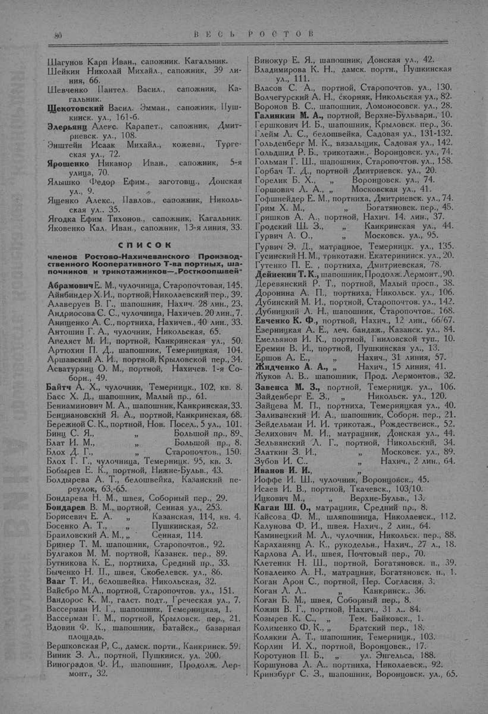

Лист источника 130
Скан

Распознанный текст
80 ВЕСЬ РОСТОВ
Шагунов Карп Иван., сапожник. Кагальник.
Шейкин Николай Михайл., сапожник, 39 ли-
ния, 66.
Шевченко Пантел. Васил., сапожник, Ка-
гальник.
Щекотовский Васил. Эмман., сапожник, Пуш-
кинск. ул., 161-б.
Элерьянц Алекс. Карапет., сапожник, Дмит-
риевск. ул., 108.
Энштейн Исаак Михайл., кожевн., Турге-
ская ул., 72.
Ярошенко Никанор Иван., сапожник, 5-я
улица, 70.
Ялышко Федор Ефим., заготовщ., Донская
ул., 9.
Ященко Алекс., Павлов., сапожник, Николь-
ская ул., 35.
Ягодка Ефим Тихонов., сапожник, Кагальник.
Яковенко Кал. Иван., сапожник, 13-я линия, 33.
СПИСОК
членов Ростово-Нахичеванского Производ-
ственного Кооперативного Т-ва портных, ша-
почников и трикотажников—„Росткоопшвей“
Абрамович Е. М., чулочница, Старопочтовая, 145.
Айнбиндер Х. И., портной, Николаевский пер., 39.
Алаверуев В. Г., шапошник, Нахич. 28 лин., 23.
Андриосова С. С., чулочница, Нахичев. 20 лин., 7.
Анищенко А. С., портниха, Нахичев., 40 лин., 33.
Антошин Г. А., чулочник, Никольская, 65.
Апеляст М. И., портной, Канкринская ул., 50.
Артюхин П. Д., шапошник, Темерницкая, 104.
Аршавский А. И., портной, Крыловской пер., 34.
Асватурянц О. М., портной, Нахичев. 1-я Со-
борн., 49.
Байтч А. Х., чулочник, Темерницк., 102, кв. 8.
Басс Х. Д., шапошник, Малый пр., 61.
Бениаминович М. А., шапошник, Канкринская, 33.
Бенциановский Я. А., портной, Канкринская, 68.
Бережной С. К., портной, Нов. Посел., 5 ул., 101.
Бинц С. Я., „ Большой пр., 89.
Блат И. М., „ Большой пр., 8.
Блох Д. Г., „ Старопочтов., 150.
Блох Г. Г., чулочница, Темерницк. 95, кв. 3.
Бобырев Е. К., портной, Нижне-Бульв., 43.
Болдырева А. Т., белошвейка, Казанский пе-
реулок, 63,-65.
Бондарева Н. М., швея, Соборный пер., 29.
Бондарев В. М., портной, Сенная ул., 253.
Борисевич Е. А. „ Казанская, 114, кв. 4.
Босенко А. Т., „ Пушкинская, 52.
Браиловский А. М., „ Сенная, 114.
Бринер Т. М. шапошник, Старопочтов., 92.
Булгаков М. М. портной, Казанск. пер., 89.
Бутникова К. Е., портниха, Средний пр., 33.
Быченко Н. П., швея, Скобелевск. ул., 86.
Вааг Т. И., белошвейка, Никольская, 32.
Вайсбро М. А., портной, Старопочтов. ул., 151.
Вандорос К. М., галст. подт., Греческая ул., 7.
Вассерман И. Г., шапошник, Темерницкая, 1.
Вассерман Г. М., портной, Крыловск. пер., 21.
Вдовин Ф. К., шапошник, Батайск., базарная
площадь.
Вершковская Р. С., дамск. портн., Канкринск. 59.
Виник З. А., портной, Пушкинск. ул. 200.
Виноградов Ф. И., шапошник, Продолж. Лер-
монт., 32.
Винокур Е. Я., шапошник, Донская ул., 42.
Владимирова К. Н., дамск. портн., Пушкинская
ул., 111.
Власов С. А., портной, Старопочтов. ул., 130.
Волчегурский А. Н., скорняк, Никольская ул., 82.
Воронов В. С., шапошник, Ломоносовск. ул., 28.
Галинкин М. А., портной, Верхне-Бульварн., 10.
Гершкович И. Б., шапошник, Крыловск. пер., 36.
Глейм Л. С., белошвейка, Садовая ул., 131-132.
Гольденберг М. К., вязальщик, Садовая ул., 142.
Гольдшид Р. Б., трикотажн., Воронцовск. ул., 74.
Гольман Г. Ш., шапошник, Старопочтов. ул., 158.
Горбач Т. Д., портной Дмитриевск. ул., 20.
Горелик Б. Х., „ Воронцовск. ул., 74.
Горшович Л. А., „ Московская ул., 41.
Гофшнейдер Е. М., портниха, Дмитриевск. ул., 74.
Грим Х. М., „ Богатяновск. пер., 45.
Гришков А. А., портной, Нахич. 14. лин., 37.
Гродский Ш. З., „ Канкринская ул., 44.
Гурвич А. О., „ Московск. ул., 95.
Гурвич Э. Д., матрацное, Темерницк. ул., 135.
Гусинский Н. М., трикотажн. Екатерининск. ул., 20.
Гутенко П. Е. , портниха, Дмитриевская, 78.
Дейнекин Т. К., шапошник, Продолж. Лермонт., 90.
Деревянский Р. Т., портной, Малый просп., 38.
Доронина А. П., портниха, Никольск. ул., 106.
Дубинский М. И., портной, Старопочтов. ул., 142.
Дубницкий А. Н., шапошник, Старопочтов., 168.
Евченко К. Ф., портной, Нахич., 12 лин., 66/67.
Езерницкая А. Е., леч. бандаж., Казанск. ул., 84.
Емельянов И. К., портной, Гниловской туп., 10.
Еремин В. И., портной, Пушкинская ул., 13.
Ершов А. Е., „ Нахич., 31 линия, 57.
Жидченко А. А., „ Нахич., 15 линия, 41.
Жуков А. В., шапошник, Прод. Лермонтов., 32.
Завенса М. З., портной, Темерницк. ул., 106.
Зайденберг Е. З., „ Никольск. ул., 120.
Зайцева М. П., портниха, Темерницкая ул., 40.
Заливанский И. А., шапошник, Соборн. пер., 21.
Зейдельман И. И. трикотаж., Рождественск., 52.
Зелихович М. И., матрацник, Донская ул., 44.
Зельвянский Л. Г., портной, Никольский, 34.
Златкин З. И., „ Московск. ул., 89.
Зубов И. С.. „ Нахич., 2 лин., 64.
Иванов И. И., ”
Иоффе И. Ш., чулочник, Воронцовск., 45.
Исаев И. В., портной, Ткачевск., 103/10.
Ицкович М., „ Верхне-Бульв., 13.
Каган Ш. О., матрацник, Средний пр., 8.
Кайсова Ф. М., шляпошница, Николаевск., 112.
Калунова Ф. И., швея. Нахич., 2 лин., 64.
Каминецкий М. Л., чулочник, Никольск. пер., 88.
Караханянц А. К., рукодельн., Нахич., 27 л., 18.
Карлова А. И., швея, Почтовый пер., 70.
Клетеник Н. Ш., портной, Богатяновск. п., 39.
Коваленко А. Н., матрацник, Богатяновск. п., 1.
Коган Арон С., портной, Пер. Согласия, 3.
Коган Л. Л., „ Канкринск., 36.
Коган Б. М., швея, Соборный пер., 8.
Кожин В. Г., портной, Нахич., 31 л., 84.
Козырев К. С., „ Тем. Байковск., 1.
Колименко Ф. К., „ Братский пер., 18.
Колякин А. Т., шапошник, Темерницк., 103.
Корлин И. Х., портной, Воронцовск., 17.
Коротунов П. Б., „ ул. Энгельса, 188.
Коршунова Л. А., портниха, Николаевск., 92.
Кринзбург С. З., шапошник, Воронцовск. ул., 65.